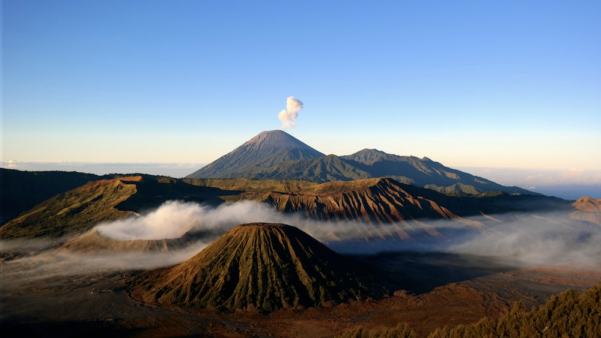
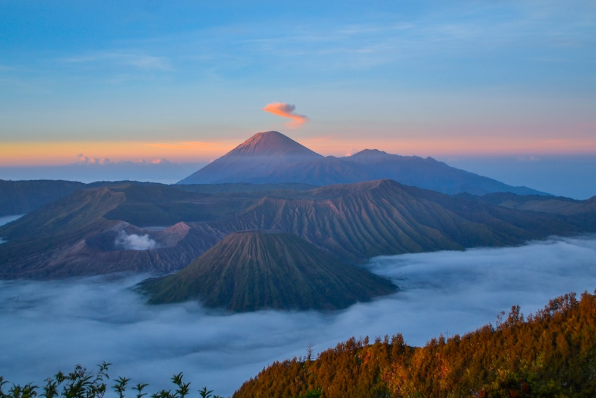

Our Work

Rinjani

Bromo

Semeru
Takai Photography adalah sebuah perusahaan fotografi yang berdedikasi untuk mengabadikan momen-momen berharga dalam hidup Anda melalui lensa yang penuh keahlian dan kreativitas. Sejak didirikan, Takai Photography telah menjadi pilihan utama bagi individu, keluarga, dan bisnis di seluruh wilayah kami untuk memenuhi semua kebutuhan fotografi mereka.
Visi kami adalah untuk menjadi pemimpin dalam bidang fotografi panorama, mengungkapkan keajaiban alam melalui karya-karya yang memukau. Misi kami adalah menghadirkan pengalaman visual yang luar biasa kepada pelanggan kami, mendorong apresiasi terhadap keindahan alam, dan menjadikan fotografi panorama sebagai medium yang inspiratif.
Rinjani
Bromo
Semeru